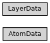

structure
Full name: ase2sprkkr.sprkkr.structure
Module class hierarchy

Description
Helper classes for a2s_visualise_in_struct utility.
This file contains function structure_file_to_atoms, which is used for visualisation of a surface structure, using .pot and in_structure.inp files.
TODO: This implementaion can handle only one-purpose reading of the structure file.
Functions
|
|
|
Read in_structure.inp file (that contains informations about the structure of a surface) and create the ASE atoms object according to the readed data. |
Classes
|
A helper object for reading in_structure.inp file |